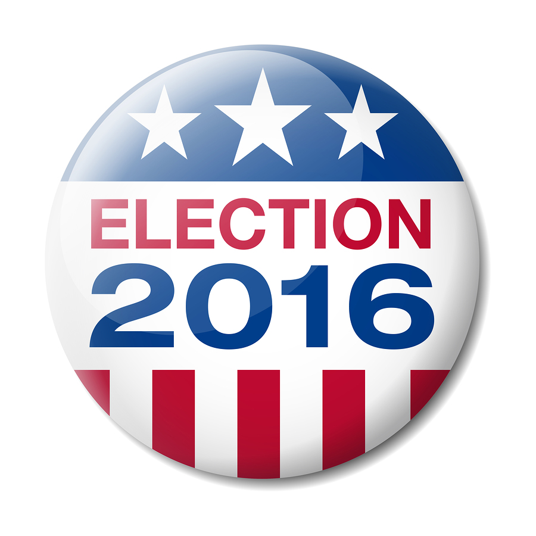

Make America Great Again?
Learning from the 2016 Election
Matthias Neill, Shahneez Haseeb, ZhengYin Lu

Election 2016 - Donald Trump's Victory
The 2016 US Presidential Election marked a turning point in American politics. For the first time, a political outsider was elected to the nation's highest office. Donald Trump's surprise victory over Hillary Clinton shocked people across the political spectrum for both its unprecedentedness and improbability. Donald Trump's lack of political experience, inflamatory rhetoric, and nearly continuous scandals had led many pundits to declare that Hillary Clinton would easily triumph. After his upset victory, experts began to investigate Trump voters and why they voted for him. Common explanations cite a decline in manufacturing employment, increasing economic inequality, immigration concerns, and nationalism as reasons for Trump's victory.Trump's campaign slogan "Make America Great Again" has come to stand for many of these ideas, at least in the minds of his supporters.
What Does'Great Again!' Mean?
To Trump's supporters, the phrase "Make American Great Again!" encapsulates the idea that America has declined from its peak and that with the right leadership, it could again become a dominant world power where citizens could expect substantial increases in quality of life. To Trump opponents, the phrase conotes the racism and sexism of America's past. Trump himself has stated that in his mind, America was great "after World War 1 and in the 1950's". Survey results suggest that most voters view either the 1950's or the 1980's as American's 'Greatest' period.
People think the 1950s, 1980s, and 1990s were good...
But Were Things Better in 1950?
Big Timeline Here - data without population
It's difficult to draw firm conclusions from the counties analysed above. The most pro-Trump counties are rural and have very low populations while the most pro-Clinton counties are typically in urban areas with much higher populations. There's such a huge disparity between these types of places that it makes more sense to look at the most populous counties that voted overwelmingly for Trump or Clinton to get a better idea of how changes have affected greater numbers of people.
Subtimeline 1 - unemployment
Subtimeline 2 - income
Subtimeline 3 - college education
Conclusions